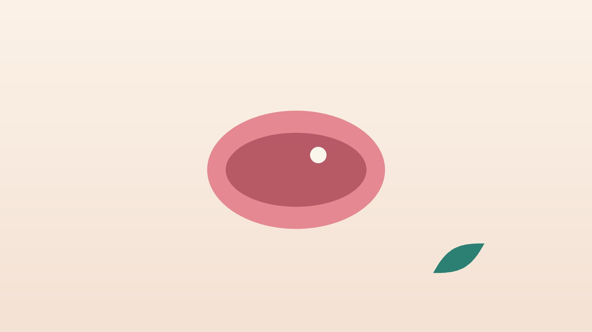

건강 칼럼 · 인천 구내염 한의원
입안이 자주 헐고 따갑다면, 반복되는 구내염 한방 관리

나의 입안 상처, 이런 모습인가요?
- 입안에 하얀 바닥과 붉은 테두리를 가진 동그란 상처가 생긴다
- 맵거나 짜고 신 음식이 닿으면 쓰라리다
- 1년에 여러 번, 또는 한 달에 한 번꼴로 다시 생긴다
- 피곤하거나 잠이 부족하면 어김없이 올라온다
- 생리 전이나 시험, 마감 같은 긴장 뒤에 잘 생긴다
- 한 번에 두세 개씩 생기거나 혀와 잇몸까지 번진다
이 체크리스트는 진단 도구가 아니라 상담이 필요한지 가늠해 보는 참고용입니다.
구내염은 왜 생기고, 언제 다른 질환을 의심하나요?
반복되는 아프타성 구내염은 성인 열 명 중 한두 명이 경험할 만큼 흔합니다. 원인이 한 가지로 밝혀져 있지는 않지만, 볼을 깨물거나 칫솔에 긁히는 작은 상처, 수면 부족과 스트레스, 생리 주기에 따른 호르몬 변화, 특정 음식이 계기가 되는 경우가 많고 가족 중에 같은 증상이 있는 분도 흔합니다. 크기가 1cm 미만인 소아프타가 대부분이며, 1cm가 넘고 깊어 몇 주씩 가는 대아프타, 좁쌀 같은 궤양이 여러 개 모여 생기는 포진양 궤양도 있습니다.
반복된다면 몸 안의 문제를 함께 살펴야 합니다. 비타민 B12, 엽산, 철분이 부족하면 입안 점막이 약해져 구내염이 잦아질 수 있어 혈액 검사로 확인합니다. 영국 국민보건서비스(NHS)는 3주가 지나도 낫지 않는 입안 궤양은 치과의사나 의사에게 진찰받도록 안내합니다. 한 자리에 오래 남아 있거나 딱딱하게 만져지는 궤양은 구강암일 수 있기 때문입니다. 또 국제 베체트병 진단 기준(ICBD)은 반복되는 입안 궤양에 생식기 궤양, 눈의 염증, 피부 병변 등이 더해지는지를 점수로 따져 베체트병을 판단합니다. 크론병 같은 염증성 장질환, 셀리악병도 입안 궤양을 동반할 수 있습니다.
치과·구강외과나 내과 진료가 먼저 필요한 신호
- 한 궤양이 2~3주가 지나도 낫지 않는다
- 궤양 주변이 딱딱하게 만져지거나 하얗고 붉은 반점이 오래 남아 있다
- 흡연이나 음주를 오래 했고 혀 옆이나 입 바닥에 궤양이 생겼다
- 입안 궤양과 함께 생식기 궤양, 눈 충혈·시야 흐림, 다리의 붉고 아픈 멍울이 있다
- 설사, 혈변, 체중 감소가 함께 있다
- 고열과 함께 입안 전체가 헐어 물도 마시기 힘들다
구강암, 베체트병, 염증성 장질환, 심한 바이러스 감염이나 약물 반응일 수 있어 조직 검사나 혈액 검사가 필요합니다. 특히 눈의 증상은 시력에 영향을 줄 수 있어 안과 진료를 서두르세요.
한의학은 구내염을 어떻게 보나요?
한의학에서는 입안이 헐어 아픈 것을 구창(口瘡)이라 불렀습니다. 『황제내경(黃帝內經)』은 '심은 혀로 통하고, 비는 입으로 통한다'고 하여 입안의 병을 심(心)과 비위(脾胃)의 상태와 연결했고, '아프고 가렵고 헌 것은 모두 심에 속한다(諸痛痒瘡 皆屬於心)'는 구절도 남겼습니다. 『동의보감』 구설(口舌) 편 역시 구창을 따로 다루며, 열이 실해서 생긴 것과 몸이 허해 뜬 열로 생긴 것을 나누어 처방을 달리했습니다.
기름지고 매운 음식, 술, 스트레스가 쌓여 위와 심에 열이 차면 그 열이 입과 혀로 올라와 붉고 화끈거리는 궤양을 만든다고 보았습니다. 반대로 과로와 수면 부족으로 몸의 진액이 마르거나 소화 기운이 약해지면, 열이 세지는 않아도 가라앉지 못한 허화(虛火)가 떠올라 옅은 색의 궤양이 오래가고 자주 재발한다고 해석했습니다. 『금궤요략』이 목과 생식기가 헐고 눈이 붉어지는 병을 호혹병(狐惑病)이라 하여 따로 다룬 것은, 오늘날 베체트병과 닮은 모습으로 자주 비교됩니다.
나의 구내염은 어떤 유형일까?
1. 위열(胃熱) 먹고 마셔서 생긴 유형
- 이런 분에게 많아요
- 맵고 기름진 음식, 술, 야식이 잦은 분
- 나타나는 모습
- 잇몸과 볼 안쪽의 궤양이 붉고 화끈거리며 크다
- 함께 오는 몸의 신호
- 입 냄새, 입 마름, 변비
- 진찰에서 보이는 모습
- 혀가 붉고 설태가 누렇고 두꺼움
- 치료 방향
- 위장에 쌓인 열을 내려 입안을 진정시키는 방향 (청위산 계열)
- 오늘부터 해 볼 것
- 술과 매운 음식, 뜨거운 국물을 2주간 줄여 보세요.
2. 심화(心火) 긴장으로 생긴 유형
- 이런 분에게 많아요
- 마감과 시험, 감정 소모가 많은 분
- 나타나는 모습
- 혀끝과 혀 옆에 궤양이 생기고 쓰라림이 심하다
- 함께 오는 몸의 신호
- 가슴 답답함, 잠을 설침, 소변이 진하고 따가움
- 진찰에서 보이는 모습
- 혀끝이 특히 붉음
- 치료 방향
- 심의 열을 소변으로 끌어내리는 방향 (도적산 계열)
- 오늘부터 해 볼 것
- 잠들기 1시간 전에는 화면을 끄고 몸의 긴장을 풀어 주세요.
3. 음허화왕(陰虛火旺) 말라서 뜬 열 유형
- 이런 분에게 많아요
- 밤샘과 과로가 잦거나 갱년기 무렵인 분
- 나타나는 모습
- 궤양이 작고 옅은 색이지만 자주 재발하고 오래간다
- 함께 오는 몸의 신호
- 입과 목 마름, 손발바닥 열감, 밤에 식은땀
- 진찰에서 보이는 모습
- 혀가 붉고 설태가 적으며 맥이 가늘고 빠름
- 치료 방향
- 마른 진액을 보태 입안으로 오르는 허열을 누그러뜨리는 방향 (지백지황환 계열)
- 오늘부터 해 볼 것
- 물을 자주 마시고 밤 12시 전에 잠드세요.
4. 비위기허(脾胃氣虛) 지쳐서 반복되는 유형
- 이런 분에게 많아요
- 소화가 약하고 끼니를 자주 거르는 분
- 나타나는 모습
- 궤양 주변이 붉지 않고 희뿌옇게 오래 머문다
- 함께 오는 몸의 신호
- 피로, 식욕 부진, 묽은 변
- 진찰에서 보이는 모습
- 혀가 옅고 잇자국이 있음
- 치료 방향
- 비위를 도와 점막의 회복력을 돕는 방향 (보중익기탕·감초사심탕 계열)
- 오늘부터 해 볼 것
- 하루 세 끼를 일정한 시간에 드세요.
한의원에서는 어떻게 진찰하나요?
- 궤양 관찰: 궤양의 위치, 크기, 개수, 생긴 지 얼마나 되었는지 직접 확인합니다.
- 재발 양상: 1년에 몇 번 생기는지, 생리 주기나 피로와 관계가 있는지 여쭙니다.
- 전신 증상: 생식기 궤양, 눈 증상, 피부 발진, 관절통, 장 증상이 있는지 확인합니다.
- 검사 결과와 설진·맥진: 혈액 검사(빈혈, B12, 엽산) 결과를 확인하고, 실열과 허열의 비중을 판단합니다.
침·약침·한약 치료는 어떻게 하나요?
1. 침 치료
- 합곡(合谷): 손등 엄지와 검지 뼈 사이 도톰한 곳. 얼굴과 입의 열을 내리는 데 씁니다. 임신 중에는 쓰지 않습니다.
- 내정(內庭): 발등 둘째와 셋째 발가락 사이 갈림 부위. 위의 열을 식힙니다.
- 노궁(勞宮): 손바닥 가운데, 주먹을 쥐었을 때 가운뎃손가락 끝이 닿는 곳. 심의 열을 내립니다.
- 조해(照海): 안쪽 복사뼈 바로 아래 오목한 곳. 진액을 도와 뜬 열을 가라앉힙니다.
입안의 궤양 부위에는 침을 놓지 않으며, 손발의 혈자리 위주로 진행합니다. 반복되는 구내염에 대한 침 연구는 규모가 작아, 재발 간격과 통증 정도를 기록하며 효과를 확인합니다.
2. 약침
입안이나 얼굴에는 약침을 쓰지 않습니다. 긴장과 피로로 뭉친 목과 어깨의 경혈에 필요한 경우에만 적용하며, 대부분은 침과 한약 위주로 관리합니다.
3. 한약
궤양이 올라온 시기에는 열을 식히는 처방을 짧게 쓰고, 가라앉은 뒤에는 재발을 부르는 피로와 소화 기운, 수면을 다스리는 처방으로 바꿉니다. 빈혈이나 비타민 B12 결핍이 확인되면 보충제를 우선하고, 베체트병으로 약을 드시는 분은 처방전을 보여 주세요.
원장님이 네이버 블로그에 진료 이야기와 건강 정보를 꾸준히 올리고 있습니다. 더 많은 이야기는 블로그에서 확인해 보세요.
블로그 보기치료는 어떤 순서로 진행되나요?
- 감별 먼저 오래가는 궤양과 전신 증상을 확인하고, 필요하면 혈액 검사와 치과·내과 진료를 먼저 받습니다.
- 첫 한방 진료 유형과 재발 계기를 찾고 구내염 일지(날짜, 위치, 계기)를 안내합니다.
- 2~6주 주 1~2회 침 치료와 한약으로 궤양의 통증과 회복 기간, 재발 간격을 살핍니다.
- 재발 관리 재발이 잦던 시기(생리 전, 마감 시즌)에 맞춰 미리 관리합니다.
재발 빈도와 동반 질환에 따라 기간이 달라지며, 진찰 후 개인별로 안내합니다.
입안을 지키는 생활 관리
- 부드러운 칫솔: 칫솔모가 부드러운 것을 쓰고, 양치할 때 잇몸과 볼 안쪽을 세게 문지르지 않습니다.
- 치약 살펴보기: 라우릴황산나트륨(SLS)이 없는 치약으로 바꿔 보고 재발이 줄어드는지 기록합니다.
- 자극 음식: 궤양이 있을 때는 맵고 짜고 신 음식, 뜨거운 국물, 딱딱한 과자를 피합니다.
- 영양: 고기, 생선, 달걀, 녹색 채소로 비타민 B12와 철분, 엽산을 고루 챙깁니다.
- 잠과 휴식: 구내염이 잦은 분일수록 수면 시간이 무너지는 시기를 미리 알아 두고 일정을 조절합니다.
다른 진료가 함께 필요한 경우
- 3주가 지나도 낫지 않는 궤양은 치과나 구강외과에서 조직 검사를 받아 보세요.
- 생식기 궤양이나 눈 증상이 함께 있다면 류마티스내과와 안과 진료를 받으세요.
- 설사, 복통, 체중 감소가 있다면 소화기내과에서 염증성 장질환을 확인하세요.
- 통증이 심해 먹기 힘들다면 치과나 이비인후과에서 바르는 약이나 가글을 처방받을 수 있습니다.
자주 묻는 질문 Q&A
- Q1. 구내염은 전염되나요?
- 아프타성 구내염은 전염되지 않습니다. 입술 주변에 물집이 생기는 헤르페스는 전염될 수 있어 구분이 필요합니다.
- Q2. 비타민을 먹으면 예방되나요?
- 결핍이 있다면 보충이 도움이 될 수 있지만, 결핍이 없으면 효과가 뚜렷하지 않아 먼저 검사를 권합니다.
- Q3. 구내염 연고를 써도 되나요?
- 통증을 줄이는 데 쓸 수 있습니다. 3주 넘게 낫지 않으면 연고만 바르지 말고 진찰을 받으세요.
- Q4. 자꾸 생기면 베체트병인가요?
- 입안 궤양만으로 베체트병이라 하지 않습니다. 생식기, 눈, 피부 증상이 함께 있는지 확인합니다.
- Q5. 입안에 침을 놓나요?
- 궤양 부위에는 놓지 않고 손발의 혈자리를 씁니다.
- Q6. 임신 중에도 치료할 수 있나요?
- 금기 혈자리를 피하고, 한약은 임신 주수와 상태를 확인한 뒤 안전한 약재로 처방합니다.
- Q7. 담배를 끊었더니 구내염이 생겼어요.
- 금연 직후 일시적으로 생길 수 있다는 보고가 있으며, 대개 시간이 지나며 줄어듭니다.
- Q8. 치료는 얼마나 받아야 하나요?
- 보통 2~6주 동안 재발 간격과 회복 기간을 보며 정합니다.
문원열 대표원장한의사 · 365스마일한의원
인천 서구 가정동에서 개원 후 10년째 진료하고 있으며, FCST 턱관절학회·연부조직학회·침도학회 등에서 활동합니다. 아픈 곳만이 아니라 증상의 원인을 찾아 진료합니다.
진료 안내
- 진료시간
- 평일 09:00~20:00 (점심시간 13:00~14:00)
토·일·공휴일 09:00~15:00 - 주소
- 인천광역시 서구 가경주로 46, 2층 (가정동)
인천2호선 가정중앙시장역 인근
영상으로 길 안내 보기 → - 주차
- 한의원 건물 바로 앞 1층 도원주차장
- 예약
- 예약 바로가기 또는 전화 예약
진료시간은 사정에 따라 바뀔 수 있으니 방문 전 전화로 확인해 주세요.
함께 읽으면 좋은 칼럼
건강 칼럼 전체 보기 →
참고 자료
- NHS, Mouth ulcers — 원문
- International Team for the Revision of the International Criteria for Behçet's Disease (ITR-ICBD). The International Criteria for Behçet's Disease (ICBD). Journal of the European Academy of Dermatology and Venereology, 2014
- 『황제내경 소문(素問)』 지진요대론(至眞要大論), 제통양창 개속어심(諸痛痒瘡 皆屬於心)
- 장중경(張仲景), 『금궤요략(金匱要略)』 백합호혹음양독병(百合狐惑陰陽毒病)
- 질병관리청 국가건강정보포털 — 원문
※ 이 글은 일반적인 건강 정보이며, 개인의 상태에 따라 치료 방법과 결과는 다를 수 있습니다. 정확한 진단과 치료는 진료를 통해 결정됩니다. 침·약침 시술 후 드물게 멍, 통증 등이 생길 수 있습니다.